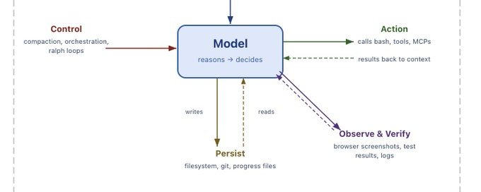
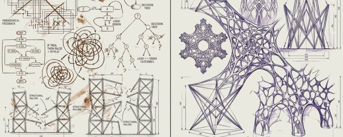

AI Agent Stack Everyone Must Use in 2026 (Builder’s Guide)
here is the truth nobody tells ai builders.
you do not need to build your own model.
all you need to build is
TLDR; if you don't wanna read it , then give this link to your agent and ask it questions to understand ➡️
the infrastructure around the model.
- The memory that persists across sessions.
- The skills that encode how tasks should be done.
- The protocols that govern what the agent can and cannot do. Garry Tan posted on April 13 that nailed this point perfectly.


If your memory dies when your harness dies, you built the harness too thick.
Memory is markdown. Skills are markdown. Brain is a git repo. The harness is a thin conductor — it reads the files, it doesn't own them.
Quote

Harrison Chase

@hwchase17

Your harness, your memory
Agent harnesses are becoming the dominant way to build agents, and they are not going anywhere. These harnesses are intimately tied to agent memory. If you used a closed harness - especially if it’s...
I spent the last three months building exactly this.
- Four-layer memory.
- Fat skills with self-rewrite hooks.
- Protocol enforcement.
- A nightly dream cycle that compresses everything the agent learned that day.
This article is 4,000 words of how I built it and why every piece exists.
If you do not want to read all that, you can just install the whole thing here:⬇️
Works with Claude Code, Cursor, OpenClaw, or any agent that reads markdown.
If you want to understand what you are installing and why each piece exists, keep reading.⬇️
The shape of the full stack
Here is the folder structure. I will explain each part in detail, but I want you to see the whole thing first because the shape matters more than any individual piece.
bash
.agent/
├── AGENTS.md # root config, harness reads this first
├── harness/
│ ├── conductor.py # thin loop (~200 LOC)
│ ├── context_budget.py # manages token allocation across modules
│ └── hooks/ # lifecycle event handlers
│ ├── pre_tool_call.py # permission enforcement
│ ├── post_execution.py # auto-logging to memory
│ └── on_failure.py # escalation + reflection trigger
├── memory/
│ ├── working/ # live task state, volatile
│ │ ├── WORKSPACE.md
│ │ └── ACTIVE_PLAN.md
│ ├── episodic/ # what happened in prior runs
│ │ ├── AGENT_LEARNINGS.jsonl
│ │ └── snapshots/
│ ├── semantic/ # abstractions that outlive episodes
│ │ ├── LESSONS.md
│ │ ├── DECISIONS.md
│ │ └── DOMAIN_KNOWLEDGE.md
│ ├── personal/ # user-specific preferences
│ │ └── PREFERENCES.md
│ └── auto_dream.py # nightly compression + consolidation
├── skills/
│ ├── _index.md # discovery registry, summaries only
│ ├── _manifest.jsonl # machine-readable skill metadata
│ ├── skillforge/
│ │ └── SKILL.md
│ ├── memory-manager/
│ │ └── SKILL.md
│ ├── git-proxy/
│ │ ├── SKILL.md
│ │ └── KNOWLEDGE.md
│ ├── api-scaffold/
│ │ ├── SKILL.md
│ │ └── scripts/scaffold.sh
│ └── ...
├── protocols/
│ ├── tool_schemas/ # typed interfaces for every tool
│ │ ├── github.schema.json
│ │ ├── shell.schema.json
│ │ └── api.schema.json
│ ├── permissions.md # what the agent can and cannot do
│ └── delegation.md # rules for handing off to sub-agents
└── tools/
├── memory_reflect.py
├── skill_loader.py # progressive disclosure engine
└── budget_tracker.py
This mirrors patterns from Gstack and Claude Code's own memory hooks. I did not design it from scratch.
I arrived at it by trying other layouts that did not work and gradually converging on this one.
The key insight, and the thing Garry's post crystallized for me, is the separation.
The harness does not think. It reads files, calls tools, writes logs, runs hooks. All the intelligence lives in the skill files and the memory files. The protocols enforce boundaries.
This means:
- You can swap the harness for a different one tomorrow and lose nothing
- You can swap the model and lose nothing
- The only things that accumulate value are the skills, the memory, and the protocols
- Those are plain markdown and JSON in a git repo
The files nobody shows you (and the prompts to generate them)
Every guide shows you the folder structure. Nobody shows you what actually goes inside the four files that make or break the system. Here they are.
AGENTS.md
This is the first file the harness reads. It is the table of contents for your agent's brain. Without it, the agent does not know where anything lives.
markdown
# Agent Infrastructure
## Memory
- `memory/working/WORKSPACE.md` — current task state (read first)
- `memory/semantic/LESSONS.md` — distilled patterns (read before decisions)
- `memory/semantic/DECISIONS.md` — past major choices and rationale
- `memory/personal/PREFERENCES.md` — your conventions and style
- `memory/episodic/AGENT_LEARNINGS.jsonl` — raw experience log
## Skills
- `skills/_index.md` — read this for skill discovery
- Only load full SKILL.md files when triggers match
- Every skill has a self-rewrite hook. Use it after failures.
## Protocols
- `protocols/permissions.md` — read before any tool call
- `protocols/tool_schemas/` — typed interfaces for external tools
## Rules
1. Check memory before making decisions you have been corrected on before
2. Log every significant action to episodic memory
3. Update WORKSPACE.md as you work
4. Follow permissions strictly. Blocked means blocked.
5. When a self-rewrite hook fires, propose conservative edits onlyPrompt to generate yours:
Read the folder structure at .agent/ and write an AGENTS.md that serves as the root config file. It should tell the agent where memory, skills, and protocols live, what to read first, and what rules to always follow. Keep it under 30 lines. It is a map, not an encyclopedia.
DECISIONS.md
This is the file that saves you from re-debating the same architectural choice three months later. Without it, the agent (and you) will revisit settled questions endlessly.
markdown
# Major Decisions
## 2026-04-13: Session store for auth tokens
**Decision:** Use Redis, not in-memory store
**Rationale:** Concurrent refresh requests cause race conditions with in-memory. Redis handles atomic operations natively.
**Alternatives considered:** PostgreSQL (too slow for token lookups), cookie-based (security concerns with PKCE)
**Status:** Active
## 2026-04-11: API framework
**Decision:** FastAPI over Express
**Rationale:** Typed request validation out of the box. Async support without callback hell. Team already knows Python.
**Alternatives considered:** Express (more ecosystem, but weaker typing), Hono (too early)
**Status:** Active
## 2026-04-08: Test strategy
**Decision:** Integration tests with mock fallbacks, no e2e for MVP
**Rationale:** E2e tests against live APIs are flaky and slow. Mock fallbacks let us run the full suite in CI under 2 minutes.
**Alternatives considered:** Full e2e with retries (too flaky), unit only (misses integration bugs)
**Status:** Active, revisit after launchPrompt to generate yours:
Read memory/semantic/LESSONS.md and memory/episodic/AGENT_LEARNINGS.jsonl. Identify the 3-5 most significant architectural or workflow decisions that have been made. For each one, write an entry in DECISIONS.md with: the decision, the rationale, alternatives that were considered, and whether it is still active. Format as markdown. Only include decisions that would be costly to revisit or re-debate.
on_failure.py
This is the hook that turns failures into learning instead of just errors. Without it, failures get logged with generic pain scores and no reflection.
python
# harness/hooks/on_failure.py
import json, datetime
EPISODIC_PATH = ".agent/memory/episodic/AGENT_LEARNINGS.jsonl"
FAILURE_THRESHOLD = 3 # trigger skill rewrite after this many
def on_failure(skill_name, action, error, context=""):
"""called when any action fails"""
entry = {
"timestamp": datetime.datetime.now().isoformat(),
"skill": skill_name,
"action": action,
"result": "failure",
"detail": str(error)[:500],
"pain_score": 8,
"importance": 7,
"reflection": f"FAILURE in {skill_name}: {type(error).__name__}: {str(error)[:200]}",
"context": context[:300]
}
with open(EPISODIC_PATH, "a") as f:
f.write(json.dumps(entry) + "\n")
# check if this skill keeps failing
recent_failures = count_recent_failures(skill_name)
if recent_failures >= FAILURE_THRESHOLD:
entry["reflection"] += (
f" | THIS SKILL HAS FAILED {recent_failures} TIMES RECENTLY."
f" Flag for rewrite."
)
entry["pain_score"] = 10
return entry
def count_recent_failures(skill_name, days=14):
"""count failures for this skill in the last N days"""
cutoff = datetime.datetime.now() - datetime.timedelta(days=days)
count = 0
try:
with open(EPISODIC_PATH) as f:
for line in f:
if not line.strip():
continue
e = json.loads(line)
if (e.get("skill") == skill_name
and e.get("result") == "failure"
and datetime.datetime.fromisoformat(
e["timestamp"]) > cutoff):
count += 1
except FileNotFoundError:
pass
return countWhat it does that post_execution.py does not:
- Automatically assigns high pain scores (8) so failures surface during retrieval
- Counts recent failures per skill
- Flags skills for rewrite after 3+ failures in 14 days
- Includes error type and context so the reflection is actionable
The cron line
bash
# run this once
crontab -e
# add this line
0 3 * * * cd /path/to/your/project && python .agent/memory/auto_dream.py >> .agent/memory/dream.log 2>&1That is it. The dream cycle runs at 3am, compresses memory, promotes lessons, archives stale entries, and git commits the result.
Check the log:
bash
tail -5 .agent/memory/dream.log
# dream cycle: promoted 2, decayed 7, kept 31Check the history:
bash
git log --oneline .agent/memory/
# a1b2c3d dream cycle: promoted 2, decayed 7, kept 31
# d4e5f6g dream cycle: promoted 0, decayed 3, kept 35
# g7h8i9j dream cycle: promoted 1, decayed 0, kept 38That is the agent's autobiography. Every line is a night of learning.
The harness: thin conductor
I spent about 30 minutes on the first version of this. You can skip it entirely if you use Claude Code or Cursor as your harness, because they already have the loop, the tool calling, and the file watching built in. Point them at your .agent/folder and you are done.
I wanted full ownership, so I wrote the conductor myself. The entire thing is under 200 lines.
python
python
# harness/conductor.py
import time, json, os, datetime, subprocess
from anthropic import Anthropic # swap for openai, gemini, etc.
from tools.skill_loader import progressive_load
from harness.hooks.pre_tool_call import check_tool_call
from harness.hooks.post_execution import log_execution
client = Anthropic(api_key=os.getenv("ANTHROPIC_API_KEY"))
MAX_CONTEXT_TOKENS = 128000
RESERVED_FOR_REASONING = 40000
def build_context(user_input):
"""
assemble context from all three modules: memory, skills, protocols.
respect the token budget. not everything can fit.
"""
budget = MAX_CONTEXT_TOKENS - RESERVED_FOR_REASONING
context_parts = []
used = 0
# 1. always load: personal preferences + active workspace
for f in ["memory/personal/PREFERENCES.md", "memory/working/WORKSPACE.md"]:
path = os.path.join(".agent", f)
if os.path.exists(path):
content = open(path).read()
context_parts.append(content)
used += len(content) // 4
# 2. load semantic lessons (truncate if needed)
lessons_path = ".agent/memory/semantic/LESSONS.md"
if os.path.exists(lessons_path):
lessons = open(lessons_path).read()[:8000]
context_parts.append(lessons)
used += len(lessons) // 4
# 3. load top 5 episodic entries by salience
episodic_path = ".agent/memory/episodic/AGENT_LEARNINGS.jsonl"
if os.path.exists(episodic_path):
entries = [json.loads(l) for l in open(episodic_path) if l.strip()]
top = sorted(entries, key=salience_score, reverse=True)[:5]
episodic_text = "\n".join(
f"- [{e['timestamp'][:10]}] {e.get('action','')}: {e.get('reflection','')}"
for e in top
)
context_parts.append(episodic_text)
used += len(episodic_text) // 4
# 4. progressive skill loading, only matched skills
for skill in progressive_load(user_input):
skill_text = f"## Skill: {skill['name']}\n{skill['content']}"
tokens = len(skill_text) // 4
if used + tokens < budget:
context_parts.append(skill_text)
used += tokens
# 5. always load permissions (short, safety-critical)
perms_path = ".agent/protocols/permissions.md"
if os.path.exists(perms_path):
context_parts.append(open(perms_path).read())
return "\n\n---\n\n".join(context_parts), used
def salience_score(entry):
age_days = (datetime.datetime.now()
- datetime.datetime.fromisoformat(entry["timestamp"])).days
pain = entry.get("pain_score", 5)
importance = entry.get("importance", 5)
recurrence = entry.get("recurrence_count", 1)
return (10 - age_days * 0.3) * (pain / 10) * (importance / 10) * min(recurrence, 3)
def run(user_input):
context, tokens_used = build_context(user_input)
response = client.messages.create(
model="claude-sonnet-4-20250514",
max_tokens=4096,
temperature=0.3,
system=(
"You are an agent with externalized memory, skills, and protocols.\n"
"Your memory, skills, and constraints are in the context below.\n"
"Read them before acting. Follow constraints strictly.\n"
"Log every action. Update memory/working/WORKSPACE.md as you go.\n\n"
f"{context}"
),
messages=[{"role": "user", "content": user_input}],
)
result = response.content[0].text
log_execution("conductor", user_input[:100], result[:500], True)
return resultThe critical function is build_context, and it deserves a mental model before you look at the priority list.
The context window is a computation box. The model only reasons over what is inside it. Everything outside it, your memory files, your skill library, your tool schemas, your entire git history, does not exist to the model unless the harness retrieves it, shapes it, and injects it.
Each piece that enters the context window is a context fragment. Each fragment is an explicit decision about what the model needs to do its work right now.
The harness is a system of blocks that control and inject context.
- Targeted fragments are signal. They steer the model toward better computation.
- Conflicting or stale fragments are noise. They make the model confused, not smarter.
This is why build_context is the most important function in the system, not the model call.
The conductor allocates based on priority:
- Personal preferences and workspace always load first
- Semantic lessons second
- Recent episodic entries third
- Matched skills fourth
- Permissions last
If the budget runs out, skills that did not trigger do not load. Every fragment that enters must earn its place. If it is not making the current decision more legible, it is making it worse.
One rule I have enforced on myself: the harness stays under 200 lines. The moment it starts doing reasoning or making decisions about which skills to load, I have put intelligence in the wrong place. That logic belongs in a skill file, not in the conductor.
The salience scoring function
This deserves a closer look because it is doing more work than it appears to. Each log entry has:
- A pain score (how badly did the mistake hurt, 1-10)
- An importance score (how often does this type of situation come up)
- A recurrence count (how many times has this pattern appeared)
The formula multiplies those against a recency decay. Recent painful important recurring things float to the top. Old minor one-off things sink.
I tried vector search before this. It was slower, more complex to set up, and did not produce noticeably better results for a single-user system.
The simple weighted formula won.
Memory: four layers, not one
The single biggest mistake in my original setup was treating memory as one undifferentiated pile.
DECISIONS.md, LESSONS.md, and AGENT_LEARNINGS.jsonl all lived in the same flat folder and the agent read them the same way.
This works for about six weeks.
Then it breaks because different kinds of memory need different retention policies, different retrieval strategies, and different update frequencies.
Here are the four layers and why they need to be separate.
Layer 1 : Working context is the live state of whatever task is happening right now. Open files, partial plans, active hypotheses, execution checkpoints. This is the most volatile layer. It changes every few minutes and becomes worthless the moment the task is done.
markdown
# memory/working/WORKSPACE.md
## Current task
Refactoring auth middleware to support OAuth2 PKCE flow
## Open files
- src/auth/middleware.ts (line 45-80 needs changes)
- src/auth/pkce.ts (new file, drafted)
- tests/auth/pkce.test.ts (3/7 tests passing)
## Active hypotheses
- The token refresh logic can reuse the existing session store
- PKCE code verifier should be stored server-side, not in cookie
## Checkpoints
- [x] Scaffolded PKCE module
- [x] Basic token exchange working
- [ ] Refresh flow
- [ ] Error handling for expired codes
- [ ] Integration tests
- The point of externalizing this is resumption. When the context window resets or you come back tomorrow, the agent reads WORKSPACE.md and picks up exactly where it left off instead of reconstructing everything from scratch.
- Update this file constantly. It is disposable. When the task finishes, archive it to episodic and start fresh.
Layer 2: Episodic memory records what happened in prior runs. Decision points, tool calls, failures, outcomes, and reflections.
This is not just a log. Retrieved episodes serve as concrete precedents that help the agent avoid repeating known mistakes.
json
{"timestamp":"2026-04-13T14:22:00","skill":"api-scaffold","action":"scaffolded /auth/pkce endpoint","result":"success","pain_score":2,"importance":6,"reflection":"PKCE flow requires server-side code verifier storage, not cookie-based as initially attempted"}
{"timestamp":"2026-04-13T15:01:00","skill":"git-proxy","action":"attempted force push to main","result":"blocked by pre_tool_call hook","pain_score":8,"importance":9,"reflection":"force push to protected branches should be permanently blocked, not just warned"}The fields that matter most:
- pain_score: how much damage the mistake caused
- importance: how likely this lesson is to be relevant again
The salience scoring function uses both to determine what surfaces during retrieval.
Layer 3 :Semantic memory stores abstractions that outlive any single episode. These are the patterns and heuristics that tend to hold across tasks. Not tied to a specific time or place.
markdown
# memory/semantic/LESSONS.md
# Agent lessons (auto-distilled)
## API design
- always validate request bodies before any database operation, not after
- prefer explicit error types over generic 500 responses
- rate limiting should be middleware, not per-route logic
## Git workflow
- never force push to main or protected branches under any circumstances
- commit messages should reference the task ID from ACTIVE_PLAN.md
## Testing
- write the failing test before writing the fix, every time
- integration tests that depend on external services need mock fallbacks
- if a test is flaky three times, delete it and rewrite from scratch
The difference between episodic and semantic is not just granularity. It is function.
- Episodic memory says "this specific thing happened on this date."
- Semantic memory says "this tends to hold across cases."
The dream cycle is the mechanism that promotes episodic entries into semantic lessons when they recur or score high enough.
Layer 4: Personal memory tracks stable information about you specifically . Your preferences, your conventions, your recurring constraints.
This layer exists because user-specific information needs different retention rules than general task knowledge.
markdown
# memory/personal/PREFERENCES.md
## Code style
- typescript strict mode always
- prefer functional patterns over classes
- 2-space indentation, no semicolons
## Workflow
- always run tests before committing
- draft PR early, mark as ready when tests pass
- prefer small PRs over large ones
## Constraints
- primary stack: TypeScript, Python, PostgreSQL
- deployment: Railway for staging, AWS for production- This is the layer that lets the agent adapt to you over time without confusing your personal conventions with general best practices.
- It should never be merged into LESSONS.md because what works for you might be terrible advice in general.
The upgraded dream cycle
The original dream cycle was a simple compression script.
This version handles all four memory layers with different policies.
python
# memory/auto_dream.py
import json, os, datetime, subprocess
from collections import defaultdict
EPISODIC_PATH = "memory/episodic/AGENT_LEARNINGS.jsonl"
SEMANTIC_PATH = "memory/semantic/LESSONS.md"
ARCHIVE_DIR = "memory/episodic/snapshots"
DECAY_DAYS = 90
PROMOTION_THRESHOLD = 7.0
def salience_score(entry):
age_days = (datetime.datetime.now()
- datetime.datetime.fromisoformat(entry["timestamp"])).days
pain = entry.get("pain_score", 5)
importance = entry.get("importance", 5)
recurrence = entry.get("recurrence_count", 1)
return (10 - age_days * 0.3) * (pain / 10) * (importance / 10) * min(recurrence, 3)
def find_recurring_patterns(entries):
"""cluster entries by skill + action pattern to detect recurrence"""
patterns = defaultdict(list)
for e in entries:
key = f"{e.get('skill', 'general')}::{e.get('action', '')[:50]}"
patterns[key].append(e)
recurring = {}
for key, group in patterns.items():
if len(group) >= 2:
best = max(group, key=lambda x: salience_score(x))
best["recurrence_count"] = len(group)
recurring[key] = best
return recurring
def promote_to_semantic(high_salience_entries):
"""append high-scoring patterns to LESSONS.md"""
if not high_salience_entries:
return
existing = ""
if os.path.exists(SEMANTIC_PATH):
existing = open(SEMANTIC_PATH).read()
new_lessons = []
for entry in high_salience_entries:
lesson_line = f"- {entry.get('reflection', entry.get('action', 'unknown'))}"
if lesson_line not in existing:
new_lessons.append(lesson_line)
if new_lessons:
with open(SEMANTIC_PATH, "a") as f:
f.write(f"\n## Auto-promoted {datetime.date.today().isoformat()}\n")
for lesson in new_lessons:
f.write(lesson + "\n")
def run_dream_cycle():
entries = [json.loads(l) for l in open(EPISODIC_PATH) if l.strip()]
if not entries:
return
# find recurring patterns + boost salience
recurring = find_recurring_patterns(entries)
# promote high-salience patterns to semantic memory
promotable = [e for e in recurring.values()
if salience_score(e) >= PROMOTION_THRESHOLD]
promote_to_semantic(promotable)
# decay old low-value entries, archive instead of delete
cutoff = datetime.datetime.now() - datetime.timedelta(days=DECAY_DAYS)
kept, archived = [], []
for e in entries:
ts = datetime.datetime.fromisoformat(e["timestamp"])
if ts < cutoff and salience_score(e) < 2.0:
archived.append(e)
else:
kept.append(e)
if archived:
os.makedirs(ARCHIVE_DIR, exist_ok=True)
archive_file = f"{ARCHIVE_DIR}/archive_{datetime.date.today()}.jsonl"
with open(archive_file, "a") as f:
for e in archived:
f.write(json.dumps(e) + "\n")
with open(EPISODIC_PATH, "w") as f:
for e in kept:
f.write(json.dumps(e) + "\n")
# archive stale working context
workspace = "memory/working/WORKSPACE.md"
if os.path.exists(workspace):
age = datetime.datetime.now() - datetime.datetime.fromtimestamp(
os.path.getmtime(workspace))
if age.days >= 2:
stale_name = f"{ARCHIVE_DIR}/workspace_{datetime.date.today()}.md"
os.rename(workspace, stale_name)
subprocess.run(["git", "add", "memory/"])
subprocess.run(["git", "commit", "-m",
f"dream cycle: promoted {len(promotable)}, "
f"decayed {len(archived)}, kept {len(kept)}"])
if __name__ == "__main__":
run_dream_cycle()The upgraded dream cycle does three things the old one did not:
- It detects recurring patterns across episodes and boosts their salience
- It automatically promotes high-salience patterns from episodic into semantic memory. Lessons that keep mattering get hardened into permanent knowledge without you manually curating them.
- It archives decayed entries instead of deleting them, so you can always git log memory/ to recover something that was compressed away too aggressively
I call it the dream cycle because it runs overnight and compresses the day's raw logs into clean distilled lessons, the same way sleep consolidates memories.
Run this on a nightly cron job. Or trigger it manually after intense sessions.
git log --oneline memory/ is still the agent's autobiography. I did not expect to find that useful. I use it constantly.
The skills
This is where I spent most of my time, and where I think most of the value lives.
Each skill is a markdown file with YAML frontmatter and a self-rewrite section at the bottom. But after running 30+ skills for three months, I learned that the skill files themselves are only half the problem. The other half is finding and loading the right skill at the right time without flooding the context window.
Skill registry and progressive disclosure
markdown
# skills/_index.md
# Skill Registry
# The agent reads this file first. Full skill files are loaded only when needed.
## skillforge
Creates new skills from observed patterns and recurring tasks.
Triggers: "create skill", "new skill", "I keep doing this manually"
## memory-manager
Actively reads, scores, and consolidates memory entries. Triggers reflection cycles.
Triggers: "reflect", "what did I learn", "compress memory", after 10+ episodic entries
## git-proxy
Handles all git operations with safety constraints.
Triggers: "commit", "push", "branch", "merge", "rebase"
Constraints: never force push to main, always run tests before push
## api-scaffold
Scaffolds new API endpoints following project conventions.
Triggers: "new endpoint", "scaffold api", "build route"
## test-writer
Generates tests from implementation code or specifications.
Triggers: "write tests", "add coverage", "test this"
## debug-investigator
Systematic debugging: reproduce, isolate, hypothesize, verify.
Triggers: "debug", "why is this failing", "investigate"
## code-reviewer
Reviews code changes against project conventions and past lessons.
Triggers: "review", "check this", "before I merge"
## deploy-checklist
Pre-deployment verification against a structured checklist.
Triggers: "deploy", "ship", "release", "go live"
Constraints: requires all tests passing, no unresolved TODOs in diffThis is the progressive disclosure layer. The agent reads _index.md on every session start. It is short. Just names, one-line descriptions, and trigger phrases.
When a trigger matches, the agent loads the full SKILL.md for that specific skill. When nothing matches, the full skill files stay on disk unloaded.
This matters because of context budget. Your model has a fixed number of tokens it can process. Memory retrieval, skill loading, tool schemas, and the model's own reasoning all compete for that budget.
- If you dump every skill file into context on every run, you waste tokens on irrelevant instructions and the model performs worse, not better.
- Models attend unevenly across long inputs. Information in the middle of a big context gets missed.
- Progressive disclosure solves this by keeping the context lean.
For machine-readable discovery, add a structured manifest alongside the human-readable index:
json
{"name":"skillforge","version":"2026-04-13","triggers":["create skill","new skill"],"tools":["bash","memory_reflect"],"preconditions":[],"constraints":[],"category":"meta"}
{"name":"git-proxy","version":"2026-04-13","triggers":["commit","push","branch","merge"],"tools":["bash"],"preconditions":["git repo initialized"],"constraints":["never force push to main","run tests before push"],"category":"operations"}
{"name":"deploy-checklist","version":"2026-04-13","triggers":["deploy","ship","release"],"tools":["bash"],"preconditions":["all tests passing"],"constraints":["no unresolved TODOs in diff","requires human approval for production"],"category":"operations"}The fields beyond name and triggers that matter:
- preconditions: what must be true before this skill can run
- constraints: hard boundaries on what the skill is allowed to do, normative not procedural
- category: used for composition when multiple skills need to coordinate
At around 50 skills the keyword trigger matching starts to miss. At 500 you will want semantic matching with embeddings. But keyword triggers work fine for the first year of solo usage.
The skill loader
python
# tools/skill_loader.py
import json, os
SKILLS_DIR = ".agent/skills"
MANIFEST_PATH = os.path.join(SKILLS_DIR, "_manifest.jsonl")
def load_manifest():
if not os.path.exists(MANIFEST_PATH):
return []
with open(MANIFEST_PATH) as f:
return [json.loads(line) for line in f if line.strip()]
def match_triggers(user_input, manifest):
matches = []
input_lower = user_input.lower()
for skill in manifest:
for trigger in skill.get("triggers", []):
if trigger.lower() in input_lower:
matches.append(skill)
break
return matches
def check_preconditions(skill):
for pre in skill.get("preconditions", []):
if pre.endswith("exists"):
path = pre.replace(" exists", "").strip()
if not os.path.exists(path):
return False
return True
def load_skill_full(skill_name):
skill_path = os.path.join(SKILLS_DIR, skill_name, "SKILL.md")
if not os.path.exists(skill_path):
return None
content = open(skill_path).read()
# also load KNOWLEDGE.md if it exists
knowledge_path = os.path.join(SKILLS_DIR, skill_name, "KNOWLEDGE.md")
if os.path.exists(knowledge_path):
content += "\n\n---\n## Accumulated knowledge\n"
content += open(knowledge_path).read()
return content
def progressive_load(user_input):
"""three-stage: manifest (always) → trigger match → full load"""
manifest = load_manifest()
matches = match_triggers(user_input, manifest)
loaded = []
for skill in matches:
if check_preconditions(skill):
content = load_skill_full(skill["name"])
if content:
loaded.append({
"name": skill["name"],
"constraints": skill.get("constraints", []),
"content": content
})
return loadedThe core skills
- skillforge is the one I built first and the one that changed the trajectory of everything else. It teaches the agent how to create new skills.
- Without it, I was writing every SKILL.md by hand.
- With it, the agent encounters a new domain, recognizes it does not have a skill for it, and drafts one.
markdown
# skills/skillforge/SKILL.md
---
name: skillforge
version: 2026-04-13
triggers: ["create skill", "new capability", "build skill"]
tools: [bash, memory_reflect, git]
---
When the user or agent needs a new capability:
1. Check existing skills in _index.md to avoid duplicates
2. Check memory/semantic/LESSONS.md for related past patterns
3. Create a new folder under skills/ with a SKILL.md following this format:
- YAML frontmatter (name, version, triggers, tools, preconditions, constraints)
- Core instructions (what to do, in plain language, including WHY not just WHAT)
- Self-rewrite hook
4. Add an entry to _index.md and _manifest.jsonl
5. Add supporting scripts/ or references/ if the skill needs them
6. Commit via git and log the decision in memory/semantic/DECISIONS.md
**Self-rewrite hook (after every new skill creation)**
Read the last 3 skill creation entries in memory. If better trigger
patterns, constraint structures, or hook designs have emerged, update
this SKILL.md and the template it uses.I want to be honest about what this does and does not do. It does not produce perfect skills on the first try. The skills it generates are rough drafts.
But rough drafts that follow a consistent format and that include self-rewrite hooks from day one.
After a few iterations the agent-generated skills start getting noticeably better, because the self-rewrite hook on skillforge itself is updating the template based on what worked and what did not in previous attempts.
memory-manager is the skill I wish I had written first.
For the first three weeks of running this system I had all the memory files but the agent was not reading them consistently.
It would write a lesson after a failure and then repeat the exact same mistake three days later because nothing told it to check.
markdown
# skills/memory-manager/SKILL.md
---
name: memory-manager
version: 2026-04-13
triggers: ["remember", "reflect", "distill", "what did I learn", "update memory"]
tools: [memory_reflect, bash, git]
preconditions: ["memory/episodic/AGENT_LEARNINGS.jsonl exists"]
constraints: ["do not delete high-salience entries", "do not merge personal into semantic"]
---
After every major task or failure, call memory_reflect to log what happened.
Before important decisions, read top entries from memory/semantic/LESSONS.md
and memory/semantic/DECISIONS.md.
When context is getting full or on explicit "reflect" trigger:
1. Pull the 5 highest-salience entries from AGENT_LEARNINGS.jsonl
2. Check if any patterns recur. If so, promote to semantic/LESSONS.md
3. Check if any SKILL.md files should be updated based on new patterns
4. Archive resolved working context to episodic/snapshots/
5. Snapshot via git
When memory/semantic/LESSONS.md exceeds 200 lines, trigger auto_dream.py.
**Self-rewrite hook (every 10 reflections or on repeated mistakes)**
If the same type of mistake appears 3+ times in recent memory, this
skill's approach to distillation or salience scoring needs adjustment.
Propose edits and log the diff in DECISIONS.md.
- The difference before and after adding this skill was immediate. Before, memory was a filing cabinet nobody opened.
- After, the agent was checking its past mistakes before making decisions and updating its own skills when it noticed patterns. T
- the filing cabinet became a feedback loop.
Self-rewrite hook template
Every skill, no matter how small, ends with a self-rewrite hook. This is the part that makes the system compound instead of staying static.
markdown
---
## Self-rewrite protocol
After every 5 uses OR on any failure:
1. Read memory/episodic/AGENT_LEARNINGS.jsonl for recent entries tagged with this skill
2. Read this skill's KNOWLEDGE.md for existing accumulated lessons
3. Check if any new patterns, recurring failures, or changed assumptions exist
4. If yes:
a. Append new lessons to KNOWLEDGE.md
b. Update trigger phrases in _manifest.jsonl if needed
c. Update constraints if a safety-relevant pattern was found
d. Update procedures if a step is now obsolete or needed
5. If a constraint was violated during execution, escalate to memory/semantic/LESSONS.md
6. Commit: "skill-update: {skill_name}, {one-line reason}"
Do NOT rewrite on every run. Most runs produce nothing worth changing.
Only rewrite when the evidence is cleaThe important addition versus my original is step 5.
- Constraint violations get escalated from the skill's local KNOWLEDGE.md into the global LESSONS.md.
- This is how a single skill's failure becomes system-wide knowledge. The git-proxy skill discovering that force pushes are dangerous should not stay local to git-proxy. It should become a global constraint.
Protocols: the layer most builders skip
This is the part almost nobody builds. And it is the part that determines whether your agent stays a toy or becomes something you can actually trust with real work.
Protocols are the contracts that govern how your agent talks to external systems.
- Without them, the model improvises message formats, argument structures, and permissions for every tool call.
- That improvisation is where most production failures come from.
- It's not that the model cannot call the tool, but because it guesses the wrong format, sends the wrong arguments, or does something it should not have permission to do.
Tool schemas
For every tool your agent can call, write a typed schema. This converts the model's task from "guess how to call this tool" to "fill in these fields."
json
{
"name": "github",
"operations": {
"create_pr": {
"required_args": {
"title": {"type": "string", "max_length": 72},
"body": {"type": "string"},
"base": {"type": "string", "default": "main"},
"head": {"type": "string"}
},
"preconditions": ["all tests must pass", "branch must have commits ahead of base"],
"side_effects": ["notifies reviewers", "triggers CI"],
"requires_approval": false
},
"merge_pr": {
"required_args": {
"pr_number": {"type": "integer"},
"merge_method": {"type": "string", "enum": ["squash", "merge", "rebase"]}
},
"preconditions": ["CI must be passing", "at least one approval"],
"side_effects": ["deploys to staging if auto-deploy enabled"],
"requires_approval": true
},
"force_push": {
"blocked_targets": ["main", "production", "staging"],
"requires_approval": true,
"warning": "destructive operation, history will be rewritten"
}
}
}Notice the fields beyond basic argument types:
- preconditions: what must be true before calling
- side_effects: what will happen downstream
- requires_approval: operations that need human sign-off
- blocked_targets: hard constraints the harness enforces regardless of what the model decides
This does not serve as documentation. The harness reads these schemas and enforces them at runtime through the pre_tool_call hook.
Permissions
markdown
# protocols/permissions.md
## Always allowed (no approval needed)
- read any file in the project directory
- run tests
- create branches
- write to memory/ and skills/ directories
- create draft pull requests
## Requires approval
- merge pull requests
- deploy to any environment
- delete files outside of memory/working/
- install new dependencies
- modify CI/CD configuration
## Never allowed
- force push to main, production, or staging
- access secrets or credentials directly
- send HTTP requests not in the approved domains list
- modify permissions.md (only humans edit this file)
- disable or bypass pre_tool_call hooks
## Approved external domains
- api.github.com
- registry.npmjs.org
- pypi.org- The permissions file is the single most important file in the protocol layer.
- It is the difference between an agent you can leave running and an agent you have to babysit.
- The rule is simple: if you would not let a new hire do it unsupervised, the agent needs approval too.
Lifecycle hooks
Hooks are the enforcement mechanism. T
hey run before and after agent actions and implement the constraints defined in permissions and tool schemas.
python
# harness/hooks/pre_tool_call.py
import json, os
def check_tool_call(tool_name, operation, args):
"""called BEFORE every tool invocation by the conductor"""
# load tool schema
schema_path = f".agent/protocols/tool_schemas/{tool_name}.schema.json"
if os.path.exists(schema_path):
schema = json.load(open(schema_path))
op_schema = schema.get("operations", {}).get(operation, {})
# check blocked targets
blocked = op_schema.get("blocked_targets", [])
target = args.get("branch") or args.get("target") or ""
if target in blocked:
return False, f"BLOCKED: {operation} to {target} is permanently forbidden"
# check if approval required
if op_schema.get("requires_approval", False):
return "approval_needed", f"{operation} requires human approval"
# check general permissions
perms = open(".agent/protocols/permissions.md").read()
if "## Never allowed" in perms:
never_section = perms.split("## Never allowed")[1].split("##")[0]
action_desc = f"{tool_name} {operation} {json.dumps(args)}".lower()
for line in never_section.strip().split("\n"):
if line.startswith("- "):
rule = line[2:].lower()
keywords = [w for w in rule.split() if len(w) > 3]
if sum(1 for k in keywords if k in action_desc) >= 2:
return False, f"BLOCKED by permission rule: {line[2:]}"
return True, "allowed"python
# harness/hooks/post_execution.py
import json, datetime
def log_execution(skill_name, action, result, success, reflection=""):
"""called AFTER every action by the conductor"""
entry = {
"timestamp": datetime.datetime.now().isoformat(),
"skill": skill_name,
"action": action,
"result": "success" if success else "failure",
"detail": str(result)[:500],
"pain_score": 2 if success else 7,
"importance": 5,
"reflection": reflection
}
with open(".agent/memory/episodic/AGENT_LEARNINGS.jsonl", "a") as f:
f.write(json.dumps(entry) + "\n")The post_execution hook is what makes the memory system compound automatically.
- Every action, success or failure, gets logged to episodic memory with a pain score
- Failures get higher pain scores
- Higher pain scores surface more often during retrieval
- The agent is more likely to remember and avoid them
You do not have to manually teach the agent anything. The hooks do it.
The six flows that make it compound
The reason this system gets better over time instead of staying static is six feedback loops between the three modules. None of them require you to do anything manually after initial setup.
- Memory feeds skill creation. When the memory-manager detects a recurring pattern in episodic memory, the same type of task handled the same way three or more times, it triggers skillforge to create a new skill from that pattern.
- Skills feed memory. Every skill execution gets logged to episodic memory via the post_execution hook. Success or failure, the result is recorded with a pain score. The memory system always has fresh data about which skills work and which do not.
- Skills run through protocols. When a skill needs to call an external tool, the call goes through the pre_tool_call hook. The skill describes what to do. The protocol governs how it is done and whether it is allowed.
- Protocols generate skills. Once you have a typed tool schema, it becomes easy to write a skill that uses it correctly. The schema tells the agent exactly what arguments are needed, what preconditions must be met, and what constraints apply. This is why writing schemas first and skills second produces better skills than the reverse.
- Memory influences which protocols get used. If past episodic entries show that a particular API endpoint fails frequently, the agent can learn to prefer an alternative path.
- Protocol results become memory. Tool outputs, approval events, error payloads. All of these get logged to episodic memory via the post_execution hook. The protocol layer produces the evidence that memory stores, which later feeds skill updates and protocol routing.
This cycle is self-reinforcing. Better memory leads to better skill creation leads to richer execution traces leads to better memory.
But it can also amplify errors. A bad lesson in semantic memory can lead to a flawed skill, whose failures generate more bad entries. The dream cycle's decay mechanism and the self-rewrite hooks' conservative update policy are the circuit breakers that prevent this.
What happened over 90 days
- Weeks 1–2: frustrating. The agent still forgot things. The memory files were there but the agent wasn't reading them reliably. I hadn't written memory-manager yet, so nothing was pulling the files into the loop.
- Weeks 2–4: it started clicking. Once memory-manager was in, the agent began checking LESSONS.md before making calls . I'd corrected before.
- Weeks 4–5: it started editing itself. I opened git-proxy's KNOWLEDGE.md one morning and there was a line in it I hadn't written. The agent had hit a rate limit, logged it, and during a reflection cycle memory-manager patched the skill.
- Week 8: things started compounding. I kept running into skills I'd forgotten I had, written by skillforge in response to problems I only half-remembered. The agent wasn't just remembering corrections anymore. It was generalizing from them.
- A lesson about API timeouts in one project ended up shaping how it scaffolded error handling in a completely different one. .
- Week 10: I hit the wall. Thirty skills, a fat LESSONS.md, tool schemas for everything. Over 90K tokens in context before the agent had even started thinking. The model started getting worse, not better, and it took me anembarrassing couple of days to figure out why.
- Progressive disclosure and the skill registry pulled it back under control, and performance snapped back basically overnight.
I do not want to overstate this.
- The agent is not sentient (not yet atleast lol) . It is not even particularly smart. What it is, is consistent. It checks its own notes.
- It updates its own instructions.
- It does not have bad days where it forgets what it learned last week.
That consistency, compounded over months, produces something that feels qualitatively different from a stateless agent, even though the underlying model is the same.
The bitter lesson while building skills



Good and Bad Harness Engineering
There are lots of ways to do Harness Engineering well and poorly, but the most important one comes down to whether or not you're practicing Bitter Lesson Engineering.
Bitter Lesson Engineering is my...
I wrote this after reading this tweet from Daniel.
If you're building skills yourself, one thing worth internalizing early: don't write driving directions. Write destinations and fences.
My first api-scaffold was twelve numbered steps. First check this, then run that, then validate this field.
The rewrite is a paragraph: "I build APIs in FastAPI, REST conventions, explicit error types, typed request bodies, rate limiting at the middleware layer. Here are three endpoints I think are well-built. Here's one that failed and why. Build something that looks like the good ones."
The rewrite produces better output now, and it keeps getting better as the models improve.
3 Important Things while building skills
- Procedures so the agent has a skeleton and doesn't skip a phase
- Heuristics so it has a default at forks and doesn't freeze
- Constraints so there's a fence around the yard
The line between that and micromanagement is easy in practice:
- Structure: "verify tests pass before committing"
- Micromanagement: "run npm test, grep for 'passed', then git add -A, then git commit -m..."
Same rule applies to the memory layer.
- Preferences are context, not instructions. "I prefer functional patterns over classes" tells the agent who you are, not how to write code.
- Keep those in personal memory as context.
- Don't promote them into procedural skill steps, or your memory layer ossifies into a style guide that stops adapting.
- The audit question I run on every skill: is this line telling the agent how, or telling it what good looks like? If it's a how, it usually doesn't need to be
What to watch out for
Context budget bloat
- Problem: 90K tokens loaded before the model thinks. Performance drops.
- Solution: Progressive disclosure. Load only matched skills. Truncate LESSONS.md. Top-k on episodic entries.
Stale skills
- Problem: API or dependency changes, skill keeps running old instructions confidently.
- Solution: Version-date every manifest entry. Flag anything untouched 60+ days for review.
Unsafe composition
- Problem: Two safe skills combine into something destructive (e.g., merge-to-main + auto-push = accidental deploy).
- Solution: Put constraints in pre_tool_call, not inside skills. Skills don't know about each other; the hook does.
Literal execution
- Problem: Agent follows procedural skills step-by-step even when steps don't make sense (runs commit/push even after failing tests).
- Solution: Write destinations and fences, not driving directions.
Stale workspace
- Problem: WORKSPACE.md isn't cleared after a task, agent wakes up thinking it's still mid-task.
- Solution: Dream cycle archives workspaces older than 2 days. Also add a reset step to every task-completion skill.
Error amplification loops
- Problem: Bad lesson → flawed skill → more failures → lesson reinforced. Becomes load-bearing.
- Solution: Dream cycle decay handles most of it. Also manually read LESSONS.md every few weeks and git revert anything wrong. Don't automate this part.
Things I would do differently
- Write memory-manager on day one, not week three.
- Build the four-layer memory separation from the start.
- Keep the brain repo separate from code repos. I
- Start with fewer skills.
- Create context-rich skills rather than procedure-based skills.
- Build the protocol layer on day one, not week six.
For personal coding agents the thin heartbeat plus a permissions file is enough.
If you are running agents against production systems you will eventually want full tool schemas and approval hooks.
My advice is to run the thin version for a few weeks first.
It will show you exactly where the guardrails need to go because the agent will try to do something it should not, and you will know.
Conclusion
Right now this system accumulates memory from one person using one agent. But agents can be forked and duplicated in ways humans cannot. A lesson one agent learns can be shared across every agent in a team.
The model you can swap whenever something better ships. The skills and memory you cannot replace. They encode your specific mistakes, your specific decisions, your specific way of working.
Own your memory. Own your skills. Keep them in plain files and git where no one can take them from you.
The thesis is inspired by Harrison Chase ( The CEO of Langchain)

Your harness, your memory
Agent harnesses are becoming the dominant way to build agents, and they are not going anywhere. These harnesses are intimately tied to agent memory. If you used a closed harness - especially if it’s...
I built the first version in an afternoon. The complete stack took a weekend. It has been getting better every day since, without me touching it
Disclaimers and Disclosures
This article was researched and written by the author, and it was edited by an AI model, Minimax M2.7.
The thumbnail was taken off Pinterest.
Harrison Chase — "Your Harness, Your Memory"
Vivek Trivedi — "The Anatomy of an Agent Harness"
Zhou et al. — "Externalization in LLM Agents: A Unified Review of Memory, Skills, Protocols and Harness Engineering"
Want to publish your own Article?
Upgrade to Premium